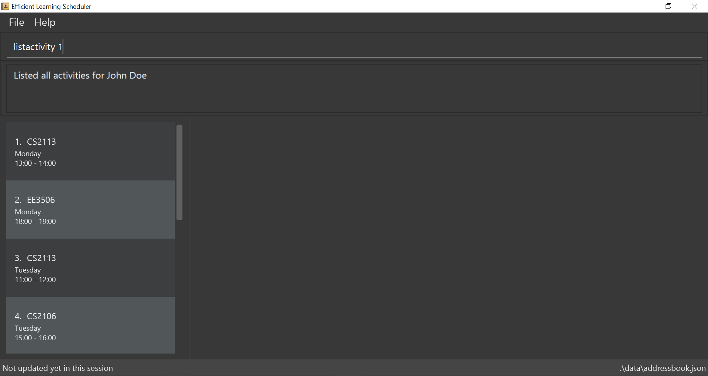

By: Team SE-EDU Since: Jun 2016 Licence: MIT
1. Introduction
Efficient Learning Scheduler is targeted to NUS students who are interested in finding ways to improve the efficiency of their learning habits. It generates an efficient and tailored learning schedule for these students to follow daily. The generated learning schedule takes into account the modules that the students are taking this semester to make their learning as efficient as possible. This intelligent scheduler also takes in research data from ALSET (http://nus.edu.sg/alset/) to complement the schedule based on past data from other students who took the modules. == Quick Start
-
Ensure you have Java version
9or later installed in your Computer. -
Download the latest
addressbook.jarhere. -
Copy the file to the folder you want to use as the home folder for your Address Book.
-
Double-click the file to start the app. The GUI should appear in a few seconds.
 -
Type the command in the command box and press Enter to execute it.
e.g. typinghelpand pressing Enter will open the help window. -
Some example commands you can try:
-
list: lists all contacts -
addn/John Doe p/98765432 e/johnd@example.com a/John street, block 123, #01-01: adds a contact namedJohn Doeto the Address Book. -
delete3: deletes the 3rd contact shown in the current list -
exit: exits the app
-
-
Refer to Section 2, “Features” for details of each command.
2. Features
Command Format
-
Words in
UPPER_CASEare the parameters to be supplied by the user e.g. inadd n/NAME,NAMEis a parameter which can be used asadd n/John Doe. -
Items in square brackets are optional e.g
n/NAME [t/TAG]can be used asn/John Doe t/friendor asn/John Doe. -
Items with
… after them can be used multiple times including zero times e.g.[t/TAG]…can be used ast/friend,t/friend t/familyetc. -
Parameters can be in any order e.g. if the command specifies
n/NAME p/PHONE_NUMBER,p/PHONE_NUMBER n/NAMEis also acceptable.
2.1. Viewing help : help
Views all the possible commands to be used on the program.
Format: help
2.2. Adding a module: add
Adds a new module into the scheduler database. Format: add m/MODULE_CODE c/CREDITS t/DAY,TIMESTART-TIMEEND Example: add m/CS2113 c/4 t/Wednesday,12-14 t/Tuesday,11-12
| A person can have any number of tags (including 0) |
3. Generating a learning schedule: 'generate'
Generates a learning schedule based on the modules in the database. A calendar week view will appear in the GUI as seen above in Section 2. Format: generate
3.1. Viewing learning schedule for a specific day: 'dayview'
Switches the calendar view from week view to day view on a specific date. Can only be done after generate is called. Format: dayview DD/MM/YYYY Example: dayview 11/02/2019
3.2. Listing all schedule for a specific day: 'daylist'
Lists down all tasks for one particular day in a list format (and not calendar view). Can only be done after generate is called.Format: daylist DD/MM/YYYY Example: daylist 11/02/2019
3.3. Clearing all schedule: 'clear'
Clears the learning schedule and deletes all existing modules in the database. Format: clear
3.4. Undoing previous command: 'undo'
Restores the learning schedule to the state before the previous undoable command was executed. Format: undo
3.5. Redoing previous command: 'redo'
Reverses the most recent undo command. Format: redo
3.6. Exiting the program: 'exit'
Exits the Efficient Learning Scheduler. Format: exit
4. Compare two time table: 'tablecompare'
compare two time table to find the difference Format:tablecompare
Examples:
-
delete 1
list
undo(reverses thedelete 1command) -
select 1
list
undo
Theundocommand fails as there are no undoable commands executed previously. -
delete 1
clear
undo(reverses theclearcommand)
undo(reverses thedelete 1command)
4.1. Redoing the previously undone command : redo
Reverses the most recent undo command.
Format: redo
Examples:
-
delete 1
undo(reverses thedelete 1command)
redo(reapplies thedelete 1command) -
delete 1
redo
Theredocommand fails as there are noundocommands executed previously. -
delete 1
clear
undo(reverses theclearcommand)
undo(reverses thedelete 1command)
redo(reapplies thedelete 1command)
redo(reapplies theclearcommand)
4.2. Clearing all entries : clear
Clears all entries from the address book.
Alias command: 'c'
Format: clear